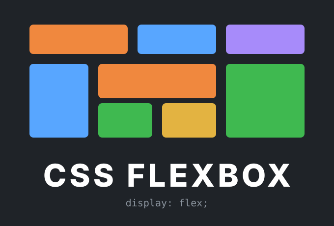
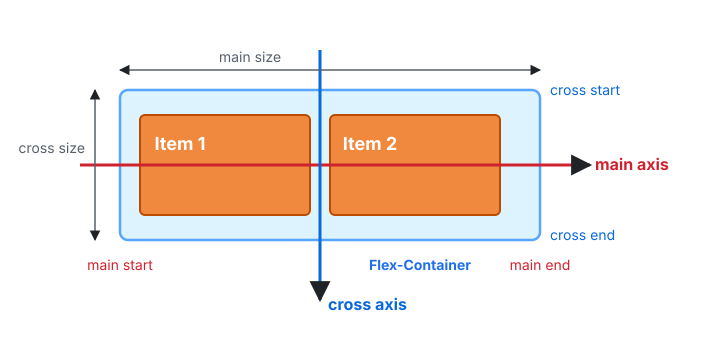
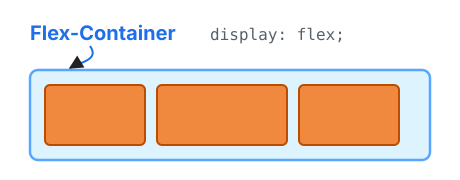
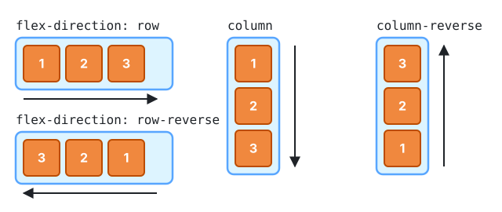
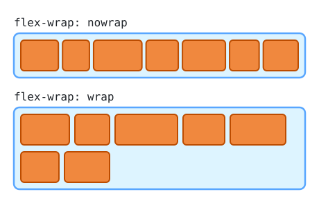
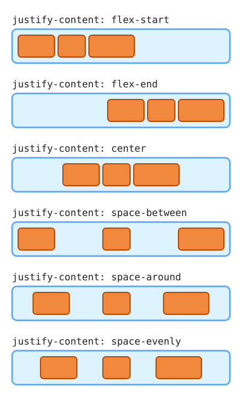
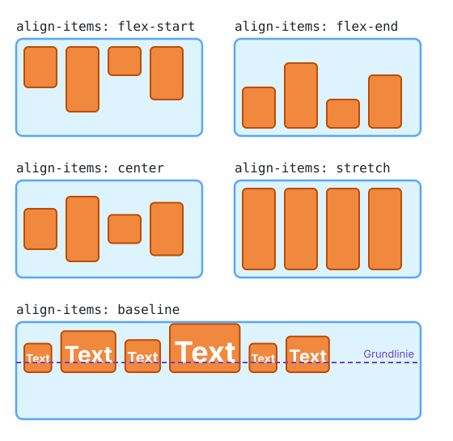
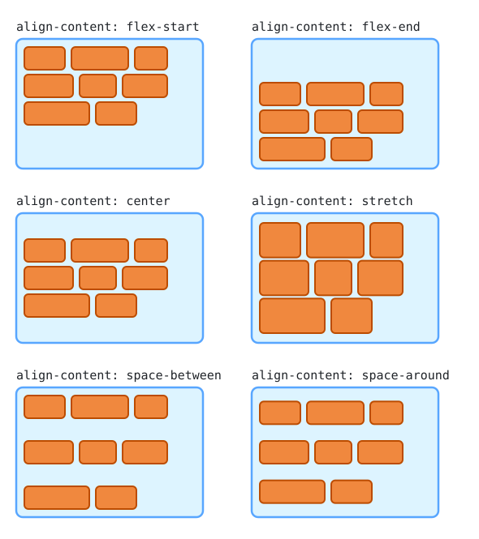
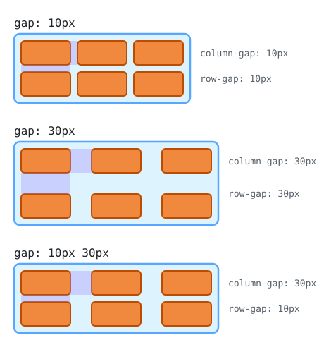

Lektion 2.5 — Teil 2: CSS & Layout
Flexbox: Flex-Container
Lernziele
- Die Idee hinter dem Flexbox Layout Module erklären
- Main-Axis und Cross-Axis unterscheiden
- Einen Flex-Container mit
display: flexerstellen - Richtung und Umbruch mit
flex-directionundflex-wrapsteuern - Flex-Kinder mit
justify-content,align-itemsundalign-contentausrichten - Abstände mit
gapsetzen
1 — Flexbox Layout Module

Das Flexbox-Layout-Modul soll eine effizientere Methode bieten, um Elemente in einem Container anzuordnen, auszurichten und den Platz zwischen ihnen zu verteilen – selbst wenn ihre Größe unbekannt und/oder dynamisch ist (daher das Wort „Flex“).
Die Hauptidee: Der Container bekommt die Möglichkeit, die Breite/Höhe (und die Reihenfolge) seiner Elemente zu verändern, um den verfügbaren Platz bestmöglich auszufüllen – hauptsächlich, um sich an alle Arten von Anzeigegeräten und Bildschirmgrößen anzupassen.
Flexbox arbeitet immer mit zwei Ebenen: dem Flex-Container (Eltern-Element) und den Flex-Kindern (Flex-Items, seine direkten Kinder). Diese Lektion behandelt die Properties des Containers, Lektion 2.6 die der Kinder.
2 — Main-Axis und Cross-Axis

Die MAIN-AXIS (Hauptachse) eines Flex-Containers ist die primäre Achse,
entlang der die Flex-Elemente angeordnet werden. Sie muss nicht unbedingt horizontal sein
– das hängt von der Property flex-direction ab.
Die CROSS-AXIS (Querachse) steht senkrecht zur Hauptachse. Ihre Richtung hängt daher von der Richtung der Hauptachse ab.
Alles mit justify wirkt auf der Main-Axis, alles mit align auf der Cross-Axis.
3 — Flex-Container: display
div {
display: flex | inline-flex;
}
Definiert einen Flex-Container – als Block (flex) oder
inline (inline-flex). Er aktiviert einen Flex-Kontext für alle seine
direkten Kinder.
4 — Flex-Container: flex-direction
div {
flex-direction: row | row-reverse |
column | column-reverse;
}
Legt die MAIN-AXIS fest:
row (default) | von links nach rechts |
row-reverse | von rechts nach links |
column | von oben nach unten |
column-reverse | von unten nach oben |
Bei row | row-reverse verläuft die Main-Axis horizontal, bei column | column-reverse vertikal.
5 — Flex-Container: flex-wrap
div {
flex-wrap: nowrap | wrap | wrap-reverse;
}
nowrap (default) | Alle Flex-Kinder in einer Zeile (möglicher Overflow). |
wrap | Flex-Kinder werden auf mehrere Zeilen umbrochen, von oben nach unten. |
wrap-reverse | Flex-Kinder werden auf mehrere Zeilen umbrochen, von unten nach oben. |
flex-flow ist die Kurzschreibweise für beide: flex-flow: row nowrap; (default).
6 — Flex-Container: justify-content
div {
justify-content:
flex-start | flex-end | center |
space-between | space-around | space-evenly;
}
flex-start (default). Richtet die Flex-Kinder auf der
MAIN-AXIS aus – bei row | row-reverse horizontal, bei
column | column-reverse vertikal.
space-between | Erstes Kind am Anfang, letztes am Ende, der Rest gleichmäßig dazwischen. |
space-around | Jedes Kind bekommt links und rechts gleich viel Platz (außen daher nur halb so viel wie zwischen den Kindern). |
space-evenly | Alle Abstände – auch die äußeren – sind exakt gleich groß. |
7 — Flex-Container: align-items
div {
align-items:
flex-start | flex-end | center |
stretch | baseline;
}
stretch (default). Richtet die Flex-Kinder auf der
CROSS-AXIS aus – bei row | row-reverse vertikal, bei
column | column-reverse horizontal.
display: flex; justify-content: center; align-items: center; zentriert ein
Element horizontal und vertikal in seinem Container – früher eines der
schwierigsten Probleme in CSS.
8 — Flex-Container: align-content
div {
align-content:
flex-start | flex-end | center |
space-between | space-around;
}
flex-start (default). Richtet die Zeilen eines
MULTI-LINE-Flex-Containers aus, also nur bei
flex-wrap: wrap | wrap-reverse – nicht bei flex-wrap: nowrap.
align-items verschiebt die Kinder innerhalb ihrer Zeile.
align-content verschiebt die Zeilen als Ganzes im Container –
deshalb hat es nur bei mehreren Zeilen eine Wirkung.
9 — Flex-Container: gap
div {
gap: 10px; /* both */
gap: 10px 20px; /* row-gap column-gap */
row-gap: 10px;
column-gap: 20px;
}
Steuert explizit den Abstand zwischen den Flex-Kindern.
Dieser Abstand wird nur zwischen den Elementen angewendet, nicht an den Außenkanten.
Projektschritt
Header, Navigation & Footer mit Flexbox
Header, Navigation und Footer werden zu Flex-Containern. Die inline-block-Navigation aus 2.2 wird dadurch überflüssig.
/* ---- 2.5 Flexbox: Flex-Container --------------------------- */
/* Marke links, Navigation rechts */
header {
display: flex;
justify-content: space-between;
align-items: center;
flex-wrap: wrap;
gap: 1rem;
}
/* Navigation: Flexbox statt inline-block */
#nav-menu ul {
display: flex;
flex-wrap: wrap;
gap: 1.5rem;
}
#nav-menu li {
margin: 0;
}
/* Footer: Infos links, Links rechts */
.footer-info {
display: flex;
justify-content: space-between;
align-items: flex-start;
gap: 2rem;
margin-top: 2rem;
}📁 Stand nach dieser Lektion: beispiele/2.5/
Häufige Fehler
Die Elemente stehen weiterhin untereinander.
display: flex gehört auf das Eltern-Element – es wirkt nur auf dessen direkte Kinder.
Mit flex-direction: column zentriert justify-content: center plötzlich vertikal.
justify = Main-Axis, align = Cross-Axis. Bei column drehen sich die Achsen.
align-content: center verändert nichts.
align-content wirkt nur bei flex-wrap: wrap mit mehreren Zeilen und wenn der Container höher ist als sein Inhalt.
Aufgaben
Spiele Flexbox Froggy bis Level 24. Notiere zu jedem Level die verwendete Property.
Erstelle eine Seite, auf der eine Karte „Tipp des Tages“ horizontal und vertikal exakt in der Mitte des Browserfensters steht (min-height: 100vh auf dem Container).
Teile den Footer der Demoseite mit Flexbox in drei Bereiche (Copyright, Links, Social Media), die mit space-between verteilt sind.
Mache die Navigation unter 600px Bildschirmbreite vertikal (flex-direction: column). Recherchiere dazu, wie man mit @media (max-width: 600px) Regeln nur für schmale Bildschirme schreibt (ausführlich in Lektion 2.8).